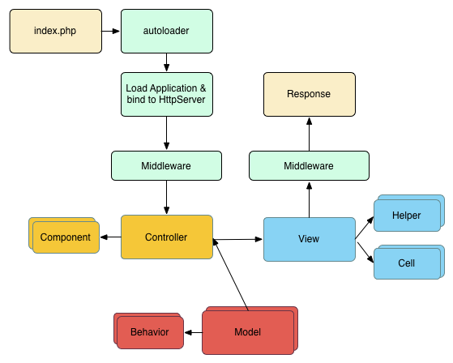

CakePHP en un Coup d’Oeil¶
CakePHP est conçu pour faciliter et simplifier les tâches classiques du développement web. En fournissant une boite à outil tout-en-un pour vous aider à démarrer, les différentes parties de CakePHP fonctionnent aussi bien ensemble que séparément.
Le but de cette présentation est d’introduire les concepts généraux de CakePHP, et de vous donner un aperçu rapide de la façon dont ces concepts sont mis en œuvre dans CakePHP. Si vous êtes impatient de démarrer un projet, vous pouvez commencer avec le tutoriel, ou vous plonger dans la documentation.
Conventions plutôt que Configuration¶
CakePHP fournit une structure organisationnelle de base qui comprend les noms de classes, les noms de fichiers, les noms de table de base de données, et d’autres conventions. Même si les conventions peuvent paraître longues à apprendre, en suivant les conventions offertes par CakePHP, vous pouvez éviter les configurations inutiles et construire une structure d’application uniforme ce qui facilite le travail quand vous travaillez sur de multiples projets. Le chapitre sur les conventions couvre les différentes conventions utilisées par CakePHP.
La Couche Model (Modèle)¶
La couche Model représente la partie de l’application qui exécute la logique applicative. Elle est responsable de récupérer les données et de les convertir selon des concepts significatifs pour votre application. Cela inclut le traitement, la validation, l’association et beaucoup d’autres tâches concernant la manipulation des données.
Dans le cas d’un réseau social, la couche Model s’occuperait des tâches telles
que sauvegarder les données utilisateur, sauvegarder les associations d’amis,
enregistrer et récupérer les photos des utilisateurs, trouver des suggestions
de nouveaux amis, etc ...
Tandis que les objets Models seraient “Friend”, “User”, “Comment”, “Photo”.
Si nous voulions charger des données depuis notre table users, nous
pourrions faire:
use Cake\ORM\TableRegistry;
$users = TableRegistry::get('Users');
$query = $users->find();
foreach ($query as $row) {
echo $row->username;
}
Vous remarquerez peut-être que nous n’avons pas eu à écrire de code avant que nous puissions commencer à travailler avec nos données. En utilisant les conventions, CakePHP utilisera des classes standards pour les classes table et entity qui n’ont pas encore été définies.
Si nous voulions créer un nouvel utilisateur et l’enregistrer (avec validation), nous ferions ceci:
use Cake\ORM\TableRegistry;
$users = TableRegistry::get('Users');
$user = $users->newEntity(['email' => 'mark@example.com']);
$users->save($user);
La Couche View (Vue)¶
La View retourne une présentation des données modélisées. Etant séparée des objets Model, elle est responsable de l’utilisation des informations dont elle dispose pour produire n’importe qu’elle interface de présentation nécessaire à votre application.
Par exemple, la view pourrait utiliser les données du model pour afficher un template de vue HTML les contenant ou un résultat au format XML pour que d’autres l’utilisent:
// Dans un fichier de template de view, nous afficherons un 'element' pour chaque utilisateur (user).
<?php foreach ($users as $user): ?>
<li class="user">
<?= $this->element('user', ['user' => $user]) ?>
</li>
<?php endforeach; ?>
La couche View fournit un certain nombre d’extensions tels que les Templates, les Elements et les Cells pour vous permettre de réutiliser votre logique de présentation.
La couche View n’est pas seulement limitée au HTML ou à la représentation en texte de données. Elle peut aussi être utilisée pour offrir une grande variété de formats tels que JSON, XML et grâce à une architecture modulable tout autre format dont vous auriez besoin, comme CSV par exemple.
La Couche Controller (Contrôleur)¶
La couche Controller gère les requêtes des utilisateurs. Elle est responsable de retourner une réponse avec l’aide mutuelle des couches Model et View.
Les Controllers peuvent être imaginés comme des managers qui ont pour mission que toutes les ressources nécessaires pour accomplir une tâche soient déléguées aux bonnes personnes. Il attend des requêtes des clients, vérifie leur validité selon l’authentification et les règles d’autorisation, délègue la récupération et le traitement des données à la couche Model, puis sélectionne les types de présentation acceptés par le client pour finalement déléguer le processus de rendu à la couche View. Un exemple de controller d’enregistrement d’utilisateur serait:
public function add()
{
$user = $this->Users->newEntity();
if ($this->request->is('post')) {
$user = $this->Users->patchEntity($user, $this->request->getData());
if ($this->Users->save($user, ['validate' => 'registration'])) {
$this->Flash->success(__('Vous êtes maintenant enregistré.'));
} else {
$this->Flash->error(__('Il y a eu un problème.'));
}
}
$this->set('user', $user);
}
Notez que nous n’avons jamais explicitement rendu de view. Les conventions de
CakePHP prendront soin de sélectionner la bonne view et de la rendre avec les
données préparées avec set().
Cycle de Requête CakePHP¶
Maintenant que vous êtes familier avec les différentes couches de CakePHP, voyons comment fonctionne le cycle d’une requête CakePHP:

Le cycle d’une requête CakePHP typique débute avec une requête utilisateur qui demande une page ou une ressource de votre application. À haut niveau chaque requête passe par les étapes suivantes:
- Les règles de réécriture de votre serveur web dirigent la requête vers webroot/index.php.
- Votre Application est chargée et liée à un
HttpServer. - Le middleware de votre application est initialisé.
- Une requête et une réponse sont dispatchées à travers le Middleware PSR-7 utilisé par votre application. Typiquement, il inclut l’interception d’erreurs et le routing.
- Si aucune réponse n’est retournée à partir du middleware et que la requête contient des informations de routing, un controller et une action sont sélectionnés.
- L’action du controller est appelée et le controller interagit avec les Models et Components nécessaires.
- Le controller délègue la création de la response à la View pour générer le résultat obtenu à partir des données du model.
- Le View utilise les Helpers et les Cells pour générer l’en-tête et le corps de la réponse.
- La réponse est de nouveau envoyée à travers le Middleware.
HttpServerémet la réponse au serveur web.
Que le Début¶
Espérons que ce bref aperçu ait éveillé votre intérêt. Quelques autres grandes fonctionnalités de CakePHP sont:
- Un framework de cache qui s’intègre à Memcached, Redis et d’autres moteurs de cache.
- Un outil de génération de code puissant pour partir sur les chapeaux de roue.
- Un framework de tests intégré pour vous assurer que votre code fonctionne correctement.
Les prochaines étapes évidentes sont de télécharger CakePHP, lire le tutoriel et construire un truc génial.